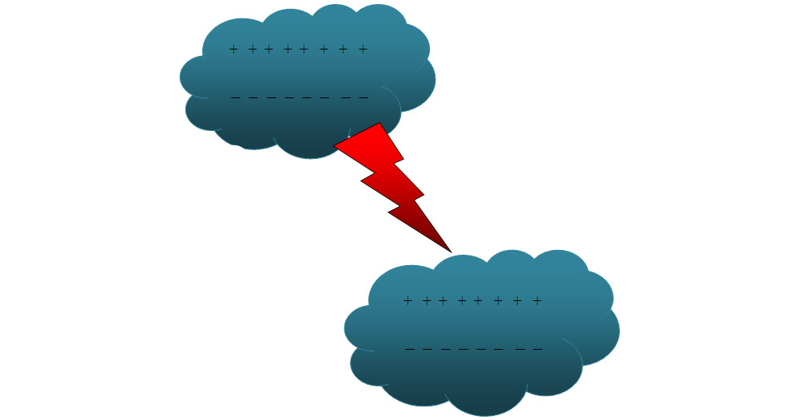

Fulgerul și curentul electric
Ce au în comun un fulger și un circuit electric?
Pornim de la o întâmplare
Observăm, povestim, explicăm
Pe cer se vede pentru o clipă o descărcare luminoasă. Dacă ea se produce între nori sau în interiorul unui nor, folosim termenul fulger; pentru descărcarea dintre nor și sol folosim termenul trăsnet. Fenomenele nu se reproduc în experimente școlare.
Curentul electric înseamnă mișcare ordonată de purtători de sarcină. Într-un fir metalic, electronii se pot deplasa prin circuit când există condițiile potrivite. Desenul animat arată un model, iar săgeata sensului convențional nu reprezintă sensul electronilor.
01 / Privește și explorează
Ce se schimbă?
Încearcă: Închide circuitul virtual și urmărește electronii. Deschide-l și compară.
Cum explicăm ce vedem?
Săgeata curentului convențional are sens opus deplasării electronilor în metal. Punctele animate sunt un model, cu viteza mult mărită.

Spune cu cuvintele tale: Ce ai schimbat? Ce ai observat? Cum explici?
Conspect
De scris în caiet
Fulgerul și curentul electric
Fulgerul este o descărcare electrică în atmosferă. Trăsnetul este o descărcare între nor și sol. Curentul electric este mișcarea ordonată a purtătorilor de sarcină electrică.
În conductoarele metalice, purtătorii mobili sunt electronii. Pentru un curent continuu într-un circuit simplu sunt necesare o sursă și o cale conductoare închisă.
Fulgerul nu este o sursă potrivită pentru experimente școlare. În timpul furtunii căutăm adăpost într-o clădire sigură.
În formularea folosită în manual, fulgerul se produce între nori sau în interiorul unui nor, iar trăsnetul leagă norul de sol. Paratrăsnetul este o instalație de protecție a clădirii; nu face sigură staționarea în aer liber pe furtună.
Lucrăm în SI
Pregătim transformările
Înainte de calcul, identificăm mărimea și unitatea SI. O unitate mai mică nu înseamnă un număr mai mic: aceeași lungime de 1 m se scrie și 100 cm. Pentru arii și volume, ținem cont de pătratul sau cubul unității.
Împărțim numărul milimetrilor la 1000.
Înmulțim numărul kilometrilor cu 1000.
1 cm = 0,01 m; împărțim la 100.
Aplică aceste reguli în cele trei transformări de la test. Scrie valoarea numerică și unitatea SI în căsuțe separate; verifică apoi dacă rezultatul are sens.
Consolidare
Completează, transformă și calculează
Primele trei cerințe folosesc noțiunile lecției. Urmează trei transformări în SI și un calcul. Poți scrie virgula sau punctul zecimal și poți folosi tastatura de pe ecran pentru simboluri.
Folosesc limbajul fizicii
Explică unei persoane care nu a urmărit animația ce ai observat. Folosește într-un paragraf cel puțin trei dintre noțiunile fulger, trăsnet, paratrăsnet, curent electric, electroni, sens convențional. Leagă observația de o cauză sau de o regulă și evită să scrii numai o enumerare de cuvinte.
04 / Tema pentru acasă
Fișă de lucru
Rezolvă în caiet sau deschide fișa cu spațiu pentru răspunsuri.
1. Desenează un circuit închis și unul deschis.
2. Explică în două propoziții diferența dintre fulger și trăsnet.
3. Scrie trei reguli de protecție în timpul furtunii.
Deschide fișa pentru acasă →